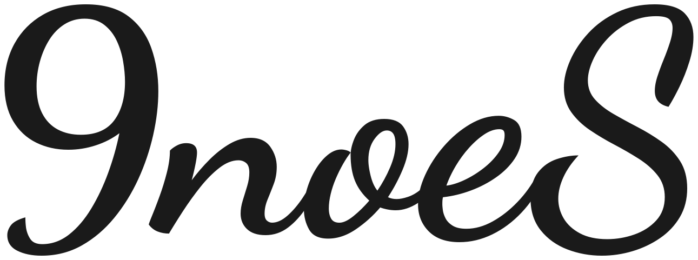
하이러닝 AI
성취기준 기반 AI 채점을 직접 돌려보며, 서·논술형 평가를 한 차시로 체험합니다.
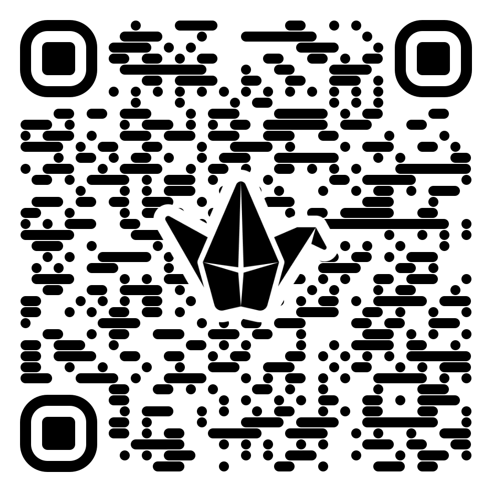
손 글씨 답안까지 AI가 채점하고,
최종 결정은 교사가 한다.
AI가 서·논술형을 채점한다고?
연수 시작 전에 흔히 받는 두 가지 의문에서 출발합니다.
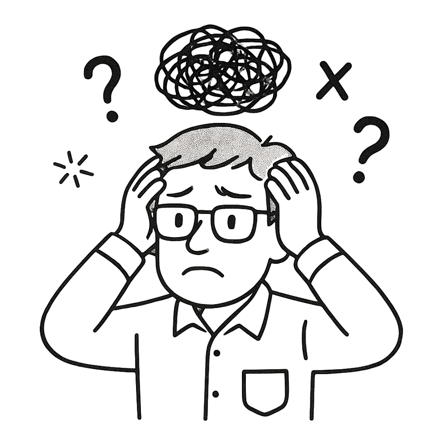
— 현장 교사들의 흔한 의문
AI 채점, 사람만큼
정확하고 공정할까?
왜 굳이 AI로
서·논술형을 평가해야 할까?
2022 개정 교육과정의 방향
'평가' 영역에서 디지털·AI는 학생 맞춤형 교육의 전제로 명시됩니다.
| 영역 | 주요 내용 | 학생 맞춤형 · 디지털 / 인공지능 관련 내용 |
|---|---|---|
| 평가 · 가 | 평가는 학생 개개인의 교육 목표 도달 정도를 확인하고, 학습의 부족한 부분을 보충하며, 교수·학습의 질을 개선하는 데 주안점을 둔다. | 학교는 학생에게 평가 결과에 대한 적절한 정보를 제공하고 추수 지도를 실시하여 자신의 학습을 지속적으로 성찰·개선할 수 있도록 한다. |
| 평가 · 다 | 학교는 교과목의 성격과 학습자 특성을 고려하여 적합한 평가 방법을 활용한다. | 학교의 여건과 교육활동의 특성을 고려해 다양한 지능정보기술을 활용함으로써 학생 맞춤형 평가를 활성화한다. |
출처 — 초·중등학교 교육과정 총론, 교육부 고시 제2022-33호
F 역량 — 평가 실행
과정중심평가의 실행과 평가 결과의 교수·학습 환류.
F1 이해
과정중심평가 이해
결과뿐 아니라 학습 과정을 중시하는 평가 개념.
F2 활용
실제 평가 실행
수업 맥락 평가 도구 설계와 다면적 평가.
F3 성찰
결과의 교수·학습 환류
맞춤형 피드백과 다음 수업 개선.
오늘의 흐름
강의 → 실습 → 환류
AI 서논술형 평가란
정의 · 2022 개정 · F 역량 · 최근 변화
기능·사례핵심 기능과 채점 사례
출제 · 성취기준 · 루브릭 · 채점 결과
실습직접 채점 체험
접속 · 세팅 · 답안 업로드 · AI 채점
환류채점, 그다음
리포트와 다음 수업 환류
AI 서논술형 평가 이해
서·논술형 평가가 무엇이고 어떻게 작동하는지 — 정의부터 채점 사례까지 살펴봅니다.
AI 서논술형 평가란 무엇인가
2022 개정 성취기준에 따라 채점부터 피드백까지 전 과정을 표준화해 지원하는 AI 평가 시스템.
성취기준·채점기준을 학습한 AI가 서·논술형 답안을 일관된 기준으로 채점하고 피드백하는 평가 시스템
공정성 · 일관성 · 구체적 근거 · 맞춤형 피드백
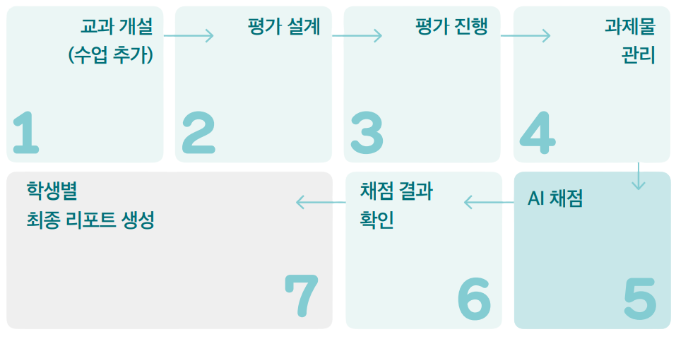
AI 평가를 떠받치는 세 가지 기술
자동 채점, 손 글씨 인식, 평가 운영 — 세 기술이 맞물려 평가 전 과정을 지원합니다.
AI 자동 채점
교과 성취기준 기반 채점
성취기준과 채점기준을 근거로 학생 답안을 분석해 일관된 기준으로 채점하고 피드백합니다.
손 글씨 인식
한국어 특화 엔진
손으로 쓴 답안을 디지털 문자로 바꿔 AI 채점을 가능하게 합니다. 이제 간단한 악보·그림도 인식합니다.
평가 운영 도구
설계부터 리포트까지
평가 설계·과제물 관리·채점·피드백·리포트 생성까지 한 곳에서 운영하도록 돕습니다.
최근 이렇게 바뀌었습니다
2026년 10~11월 공지 기준 — 교과가 넓어지고, 보안이 강화됐습니다.
음악·미술·체육 교과 확대
국어·사회·과학·영어·수학에 더해 음악·미술·체육도 AI 채점을 쓸 수 있습니다. 12월 31일까지 베타로 운영합니다.
중·고등: 이름 → 내 정보 → 교과 선택에서 추가
악보·그림 답안 인식
간단한 악보나 그림이 들어간 답안도 인식합니다. 복잡한 답안은 인식 결과를 확인하고 고쳐 씁니다.
인식이 어려운 문항은 [직접 채점 (AI 제외)]
보안 강화 후 AI 채점 재개
11월 5~10일 점검으로 멈췄던 AI 채점·피드백이 다시 열렸습니다. 보안 환경 때문에 결과가 이전보다 늦게 나올 수 있습니다.
실습 때 채점 대기 시간을 넉넉히 잡기
출처 — AI 서·논술형 평가지원시스템 공지사항
여러 출제 방식, 상황에 맞춰 골라 쓴다
과목과 평가 의도에 따라 맞는 방식이 다릅니다. 서·논술형은 'AI 논술형 출제'로 이어집니다.
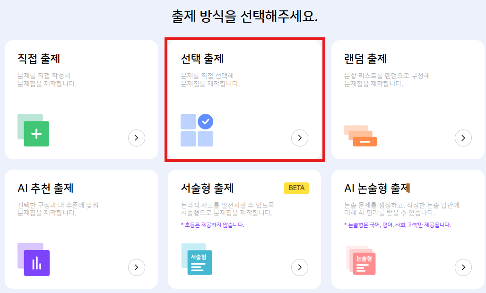
- 1직접 · 선택 출제문제를 직접 만들거나, 제공 문항에서 고릅니다.
- 2랜덤 · AI 추천 출제단원 기반 무작위, 진단 데이터 기반 맞춤 출제입니다.
- 3AI 논술형 출제AI 채점과 피드백이 자동으로 따라옵니다.
성취기준으로 평가의 근거를 세운다
평가명과 성취기준을 입력하면, 이후 채점과 피드백이 그 위에서 이뤄집니다.
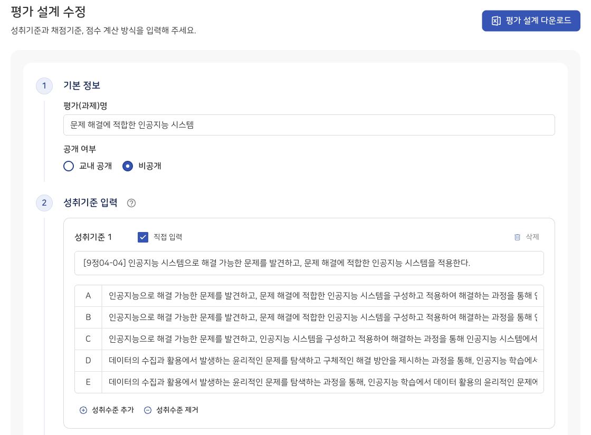
[9정04-04] 인공지능 시스템
- 1평가(과제)명 · 공개 여부평가 계획서에 맞게 이름을 쓰고, 교내 공개·비공개를 정합니다.
- 2성취기준 · 성취수준성취기준을 고르거나 직접 입력하고, A~E 수준을 적습니다.
- 3근거 설정성취기준·채점기준이 곧 AI 채점의 근거가 됩니다.
채점 기준은 구체적일수록 정확하다
추상적인 표현을 피하고, 점수 구간마다 무엇을 봐야 하는지 명확히 적습니다.
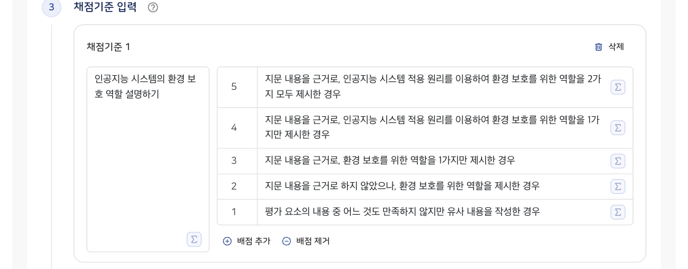
루브릭 설계
- 1채점 요소 · 배점평가할 요소를 나누고 점수 구간을 정합니다.
- 2관찰 가능한 서술 NEW직접 쓰거나 [채점기준 AI 생성]으로 초안을 받아 다듬습니다.
- 3점수 계산 · 결시자배점 그대로 쓸지 등급으로 환산할지, 미제출·미응시 점수를 정합니다.
AI가 채점하고, 근거까지 보여준다
손 글씨 원본 옆에 채점 요소별 점수·근거·피드백이 놓이고 — 최종 결정은 교사가 합니다.
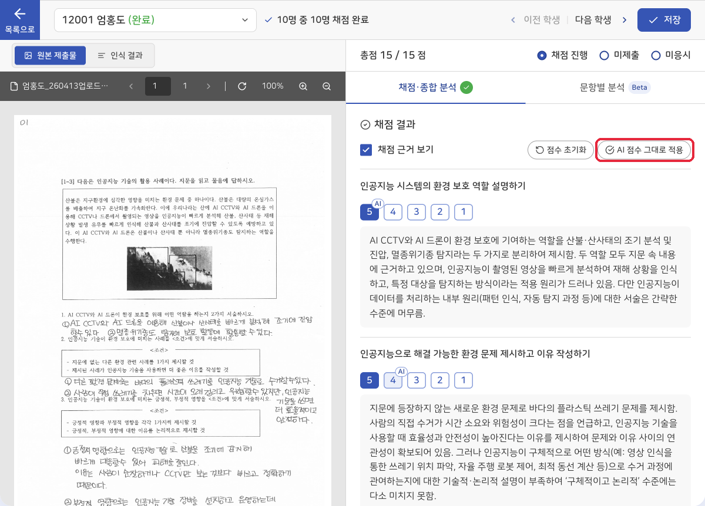
채점 결과 확인
- 1원본과 나란히왼쪽 손 글씨 원본(또는 인식 결과)을 보며 검토합니다.
- 2요소별 점수 · 근거'AI' 표시가 AI 제안 점수, 아래 글이 판단 근거입니다.
- 3교사 최종 확정[AI 점수 그대로 적용]하거나 점수를 바꾼 뒤 저장합니다.
AI는 채점을 보조할 뿐, 최종 권한은 선생님에게 있습니다.
직접 채점, 같이 돌려봅니다
제공된 자료로 평가를 만들고, 같은 답안을 AI로 채점해 봅니다.
직접 채점, 이렇게 진행합니다
제공된 자료로 평가를 만들고, 같은 답안을 AI로 채점해 봅니다.
평가 만들기
세팅 · 평가 설계
수업을 추가하고 학생을 등록한 뒤, 성취기준과 채점기준을 입력합니다.
답안 올리기
업로드 · 과제물 인식
학급 스캔본을 올려 학생별로 나누고, 과제물 인식(OCR)을 돌립니다.
AI 채점
채점 · 결과 확정
AI 채점을 실행하고, 결과와 근거를 확인해 최종 점수를 확정합니다.
먼저, 이렇게 들어갑니다
AI 교수·학습 플랫폼에 로그인하면 서·논술형 평가로 바로 넘어갈 수 있습니다.
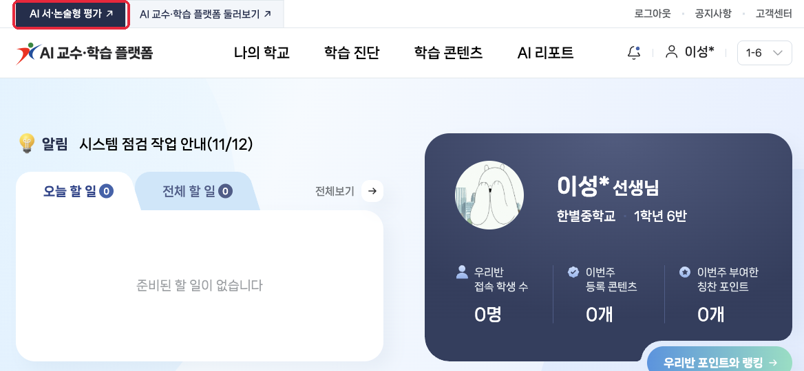
접속하기
- 1플랫폼 로그인hi.goe.go.kr 에 교사 계정으로 로그인합니다.
- 2AI 서·논술형 평가왼쪽 위 [AI 서·논술형 평가 ↗]를 누릅니다.
- 3나의 평가 확인새 창(hiai.goe.go.kr)에서 '나의 평가' 화면이 열립니다.
직접 채점, 여기서 시작합니다
제공된 자료로 함께 평가를 만들고, 같은 답안을 채점해 봅니다.
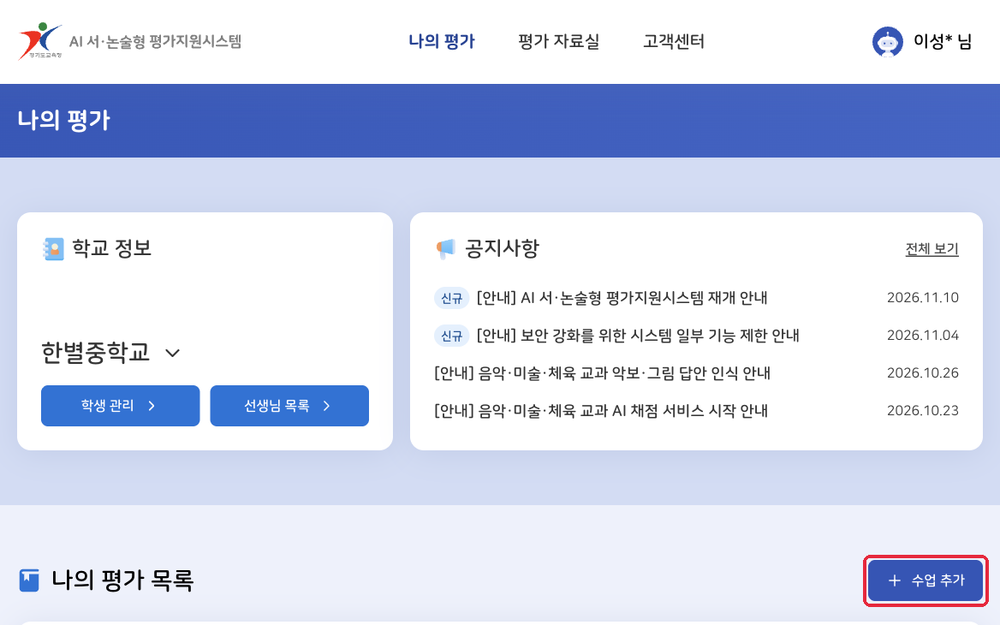
평가 세팅
- 1실습 키트 열기이 자료의 [실습 키트]에서 학생 명단·답안 파일을 받습니다.
- 2수업 추가[수업 추가]에서 학기·학년·과목·수업명·반 편성을 정합니다.
- 3학생 등록은 한 분만학생 정보는 학교 전체에 공유됩니다. 이미 있으면 평가 대상에서 고르기만 합니다.
평가 설계, 두 가지 길이 있습니다
빠르게 가져오거나, 한 칸씩 직접 넣어 보거나 — 붙여 넣기는 실습 키트가 대신 셉니다.
평가 자료실에서 가져오기
- 실습 키트의 [실습용 계획 열기] → 비공개로 바꿔 저장
- 평가 설계 탭 → [설계 추가] → [평가 자료실에서 가져오기]
- 실습용 계획을 골라 가져온 뒤 확인하고 저장합니다.
실습 키트 → 평가 설계 → A 가져오기
직접 입력 — 입력 도우미
- 평가 설계 탭 → [설계 추가] → [새로 만들기]
- 실습 키트에서 [복사하고 다음]을 누르고, 사이트 칸에 Ctrl+V.
- 다음에 넣을 칸 이름을 보며 끝까지 반복합니다.
실습 키트 → 평가 설계 → B 직접 입력
답안을 올리고, 먼저 인식시킨다
학급 스캔본을 한 번에 올리고, 과제물 인식을 마쳐야 AI 채점이 열립니다.
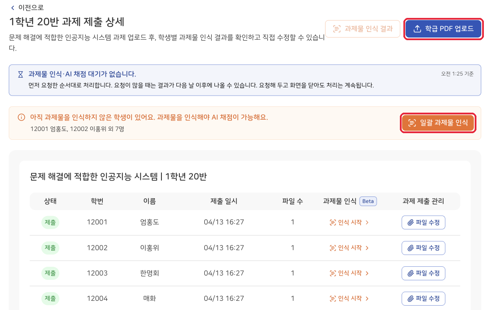
과제물 업로드 · 인식
- 1학급 PDF 업로드학급 스캔본을 올리고 학생별로 나눕니다. 개별 파일도 추가할 수 있습니다.
- 2일괄 과제물 인식 NEW손 글씨를 글자로 바꾸는 단계입니다. 인식해야 AI 채점이 가능합니다.
- 3인식 결과 확인[과제물 인식 결과]에서 잘못 읽은 글자를 고칩니다.
학급 PDF를 다시 올리면 기존 파일·인식 결과·채점 결과가 모두 지워지고 복구할 수 없습니다.
AI 채점을 돌리고, 결과를 확정한다
반마다 실행하면 순서대로 처리되고, 결과와 근거가 채워집니다.
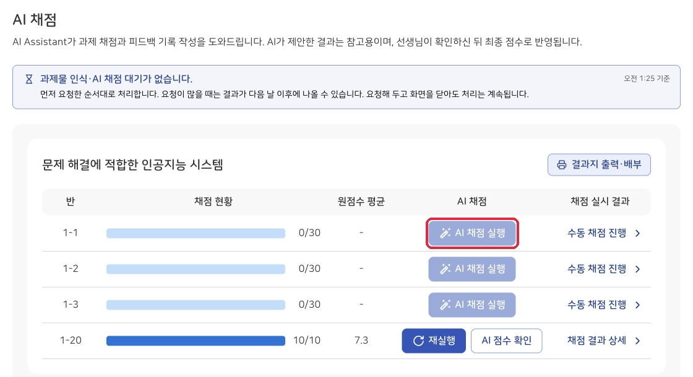
AI 채점 실행
- 1AI 채점 실행AI 채점 탭에서 반별 [AI 채점 실행]을 누릅니다.
- 2기다리기요청 순서대로 처리합니다. 화면을 닫아도 계속되고, 몰리면 다음 날 나올 수 있습니다.
- 3결과 확인 · 확정[채점 결과 상세] → 학생별로 검토하고 저장합니다.
채점, 그다음 — 결과를 다음 수업으로
평가 결과는 리포트로 남아, 학생 피드백과 다음 수업 설계의 근거가 됩니다.
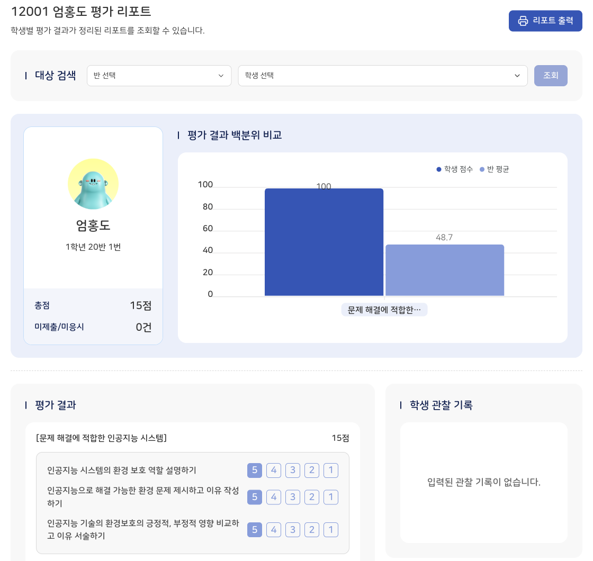
평가 리포트
- 1반 평균과 비교학생 점수를 반 평균과 나란히 보고, 요소별 강약을 짚습니다.
- 2피드백 · 관찰 기록잘한 점·보완할 점 피드백과 교사 관찰 기록이 한 장에 모입니다.
- 3출력 · 다운로드리포트·결과지를 출력해 배부하고, 점수는 엑셀로 받습니다.
연수가 끝난 지금, 같은 질문을 다시.
강의와 실습을 거친 후, 처음의 두 의문은 어떻게 변했을까요?
— 연수 시작 시점의 '나'
AI 채점, 사람만큼
정확하고 공정할까?
왜 굳이 AI로
서·논술형을 평가해야 할까?
AI 채점, 충분히 쓸만하네.
오늘 배운 만큼만 — 작게, 그리고 적합한 수업부터 시작합니다.
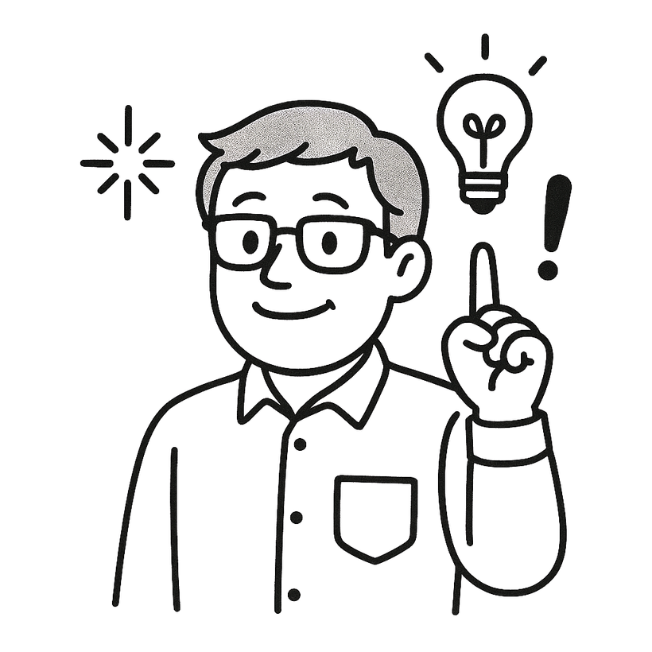
— 연수 종료 시점의 '나'
AI 채점, 생각보다 쓸 만하네!
다음 서·논술형 평가에
한 번 적용해 볼까?
도구는 도구일 뿐, 핵심은 결국 교사다.
연수의 마지막은, 30년 전에 이미 같은 결론에 도달했던 한 마디로.
"
Technology is just a tool. In terms of getting the kids working together and motivating them, the teacher is most important.
BILL GATES
The Independent on Sunday · 1997. 10. 12.
— Bill Gates
감사합니다
오늘의 한 차시가, 내일 우리 교실의 첫 번째 시도가 되기를